0221 · Montaje y mantenimiento de equipo · Tema 1
Ejercicios de circuitos: Ley de Ohm
Resueltos
R1. Circuito en serie
Con V = 9 V y R₁ = 1 Ω, R₂ = 2 Ω, R₃ = 3 Ω, calcula la resistencia total, la intensidad y el voltaje en cada resistencia.
Ver solución
- R = 1 + 2 + 3 = 6 Ω
- I = 9 / 6 = 1,5 A (igual en todo el circuito)
- V₁ = 1,5 V · V₂ = 3 V · V₃ = 4,5 V (suman 9 V ✔)
R2. Circuito en paralelo
Con V = 9 V y R₁ = 3 Ω, R₂ = 4 Ω, R₃ = 12 Ω, calcula la resistencia total, la intensidad de cada rama y el voltaje en cada resistencia.
Ver solución
- 1/R = 1/3 + 1/4 + 1/12 = 8/12 → R = 1,5 Ω
- V en cada rama = 9 V
- I₁ = 3 A · I₂ = 2,25 A · I₃ = 0,75 A (suman 6 A ✔)
R3. Circuito mixto
Con V = 9 V, R₁ = 3 Ω en serie con el paralelo de R₂ = 4 Ω y R₃ = 12 Ω, calcula la resistencia del paralelo, la total, la intensidad total y los voltajes en R₁ y en R₂/R₃.
Ver solución
- R₂∥R₃ = (4·12)/(4+12) = 3 Ω
- R total = 3 + 3 = 6 Ω → I = 9/6 = 1,5 A
- V(R₁) = 4,5 V · V(paralelo) = 4,5 V
Boletín 1 · Serie, paralelo y mixto
Circuitos redibujados del boletín del curso 2023/24. Resuélvelos con la Ley de Ohm.
En esta web se numeran del 1 al 10: el PDF original repite el número 4. Por eso, el ejercicio 10 de aquí corresponde al ejercicio 9 del PDF.
1. ¿Cuánta corriente produce la fuente a través de la resistencia?
2. ¿Qué valor debe tener la resistencia para que la corriente sea de 3 A?
3. ¿Qué valor debe tener la fuente para que la corriente sea de 1 A con una resistencia de 100 Ω?
4. Calcula la corriente total.
5. Calcula la corriente provocada por las dos fuentes colocadas en serie.
6. Calcula el valor de la resistencia para que la corriente sea de 2,5 A.
7. Calcula la corriente que circula por el circuito.
8. Calcula la corriente que circula por el circuito (resistencias en paralelo).
9. Calcula el voltaje de la fuente para que exista una corriente de 6 A.
La fuente se ha desplazado a la izquierda para facilitar la lectura. Conserva las mismas conexiones: las cinco resistencias están en paralelo entre sus dos terminales. Los 6 A son la intensidad total.
10. Calcula la corriente suministrada por la fuente de 45 V.
Ejercicio 9 del PDF original. Identifica los nodos antes de decidir qué resistencias están en serie y cuáles en paralelo.
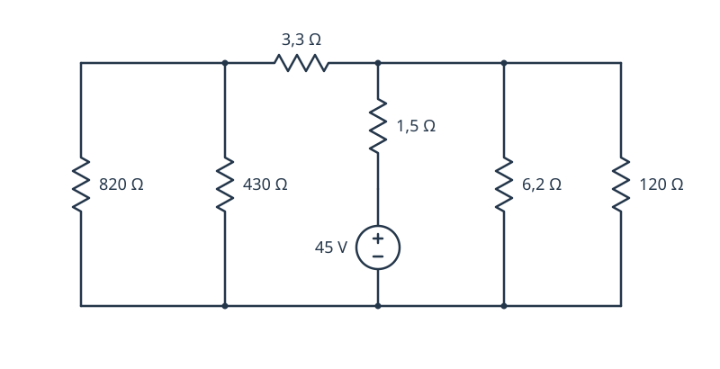

Boletín 2 · Circuitos mixtos
Los cinco circuitos del boletín manuscrito, redibujados conservando los valores y las conexiones. Calcula la resistencia equivalente antes de aplicar la Ley de Ohm a la fuente.
En móvil puedes desplazar los esquemas horizontalmente. Ábrelos ampliados para verlos a mayor tamaño o descarga el SVG para imprimirlo sin pérdida de calidad.
1. Determina el voltaje de la fuente.
La corriente total suministrada por la fuente es de 60 mA. Ten en cuenta que dos resistencias están expresadas en kiloohmios.
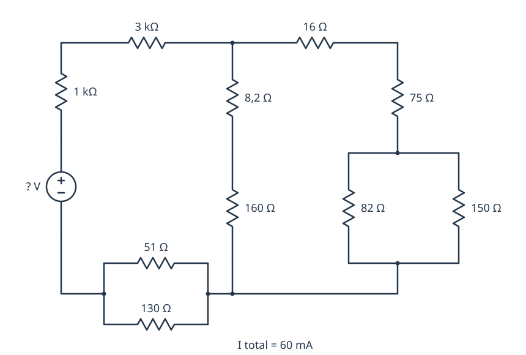

2. Calcula la corriente suministrada por la fuente de 110 V.
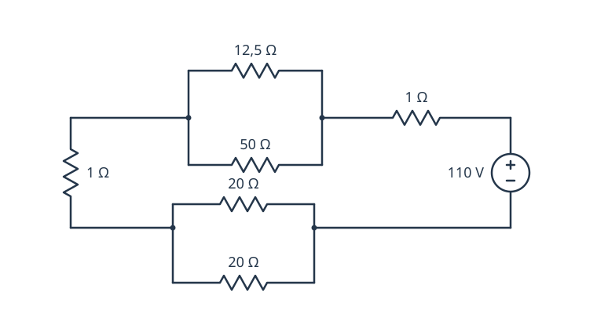

3. Calcula la corriente suministrada por la fuente de 24 V.
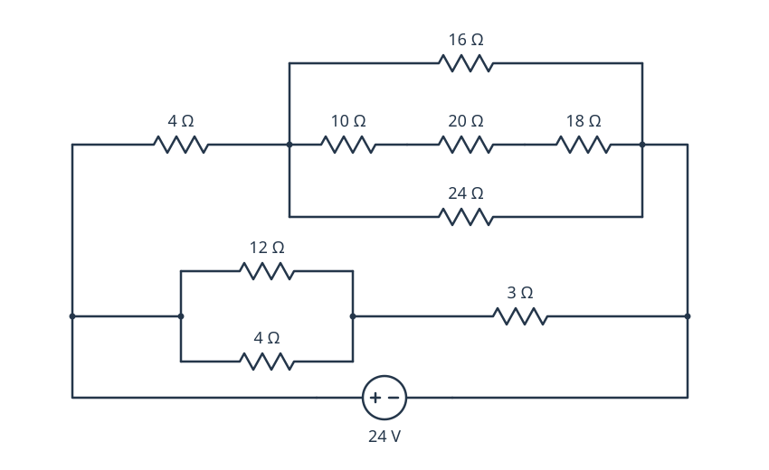

4. Calcula la intensidad suministrada por la fuente de 21 V.
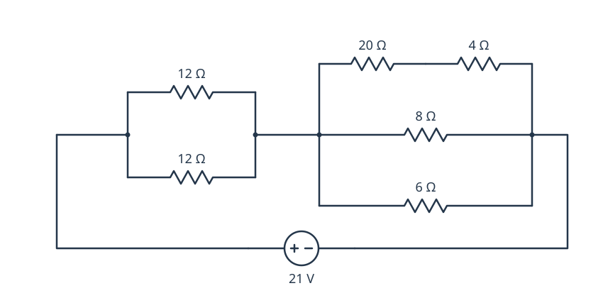

5. Calcula la intensidad suministrada por la fuente de 35 V.
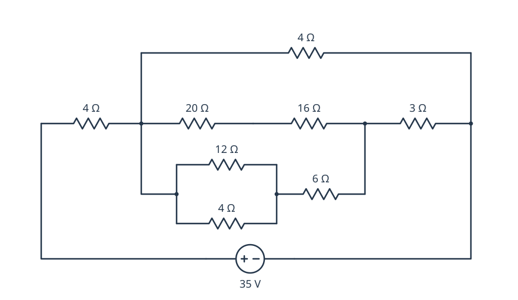

Boletín 3 · Potencia y energía
Hasta ahora calculabas tensiones e intensidades. Ahora vas a calcular cuánta energía gasta cada componente. Es lo que decide si una resistencia se quema, cuánto se calienta un ordenador o qué fuente de alimentación hay que comprar. Repasa el apartado 1.2.6 de la teoría.
Fórmulas que vas a usar
- P = V × I (vatios, W). Con la Ley de Ohm: P = I² × R y P = V² / R.
- Elige la fórmula según lo que conozcas. En serie todas comparten la I: usa I² × R. En paralelo todas comparten la V: usa V² / R.
- Conservación: la potencia que entrega la fuente es igual a la suma de las potencias de todos los componentes. Es la mejor forma de comprobar tus resultados.
- Energía: E = P × t. En la factura de la luz se mide en kWh: potencia en kW por tiempo en horas.
- Cada resistencia tiene una potencia máxima (¼ W, ½ W, 1 W…). Si disipa más, se calienta y se quema. En la práctica se elige al menos el doble de la calculada.
Resueltos de potencia
R4. Potencia en un circuito mixto
En el circuito del resuelto R3 (9 V; R₁ = 3 Ω en serie con R₂ = 4 Ω ∥ R₃ = 12 Ω), calcula la potencia de cada resistencia y la que entrega la fuente. Comprueba que coinciden.
Ver solución
Del R3 ya sabemos: I = 1,5 A, V(R₁) = 4,5 V y V(paralelo) = 4,5 V.
- R₁ (la recorre toda la I): P₁ = I² · R = 1,5² · 3 = 6,75 W
- R₂ (conocemos su V): P₂ = V² / R = 4,5² / 4 = 5,06 W
- R₃: P₃ = 4,5² / 12 = 1,69 W
- Suma: 6,75 + 5,06 + 1,69 = 13,5 W
- Fuente: P = V · I = 9 · 1,5 = 13,5 W ✔
Fíjate: en el paralelo, la resistencia más pequeña (4 Ω) es la que más potencia disipa, porque por ella pasa más corriente.
R5. ¿Qué resistencia compro?
El circuito del LED de la práctica: fuente de 9 V, resistencia de 330 Ω y LED rojo (2 V). Calcula la potencia de la resistencia, la del LED y la de la fuente. ¿Sirve una resistencia de ¼ W?
Ver solución
- I = (9 − 2) / 330 = 0,0212 A = 21,2 mA
- Resistencia: PR = V² / R = 7² / 330 = 0,148 W (148 mW)
- LED: PLED = 2 · 0,0212 = 0,042 W (42 mW)
- Fuente: P = 9 · 0,0212 = 0,191 W = 0,148 + 0,042 ✔
¼ W = 0,25 W, mayor que 0,148 W: sí sirve, aunque trabaja al 60 % de su máximo y se notará algo templada. Curiosidad: la resistencia gasta 3,5 veces más que el propio LED.
R6. Lo que cuesta un ordenador
Un ordenador consume 250 W y está encendido 6 horas al día, 22 días al mes. Si el kWh cuesta 0,15 €, ¿cuánta energía gasta al mes y cuánto cuesta?
Ver solución
- Pasamos la potencia a kW: 250 W = 0,25 kW
- Horas al mes: 6 · 22 = 132 h
- E = P · t = 0,25 · 132 = 33 kWh
- Coste = 33 · 0,15 = 4,95 € al mes
Ejercicios de potencia
1. Una bombilla de 230 V
Una bombilla de 60 W funciona a 230 V. Calcula la intensidad que consume y su resistencia.
2. ¿Aguanta la resistencia?
Conectamos una resistencia de 100 Ω de ¼ W a una fuente de 12 V. Calcula la potencia que disipa. ¿Aguanta? Si no, ¿de qué potencia la comprarías?
3. Potencia en serie
Calcula la potencia de cada resistencia del resuelto R1 (9 V; 1 Ω, 2 Ω y 3 Ω en serie) y la de la fuente. ¿Cuál disipa más? Enuncia una regla.
4. Potencia en paralelo
Haz lo mismo con el resuelto R2 (9 V; 3 Ω, 4 Ω y 12 Ω en paralelo). ¿Cuál disipa más ahora? Compara la regla con la del ejercicio 3: ¿por qué es al revés?
5. Cinco resistencias en serie
En el circuito del ejercicio 4 del boletín 1 (90 V; 10, 5, 2, 8 y 20 Ω), calcula la potencia de cada resistencia y la total. Comprueba la conservación de la potencia.
6. La resistencia mínima
Solo tienes resistencias de ¼ W y una fuente de 5 V. ¿Cuál es el valor más pequeño de resistencia que puedes conectar directamente a la fuente sin que se queme?
7. Mixto: serie, paralelo y serie
Calcula la intensidad total, la potencia de cada resistencia y la de la fuente. Comprueba que coinciden.
8. La fuente de alimentación del PC
Una fuente ATX entrega, a plena carga, 25 A por la línea de +12 V, 10 A por la de +5 V y 8 A por la de +3,3 V.
- Calcula la potencia de cada línea y la potencia total de salida.
- Si su eficiencia es del 85 %, ¿cuánta potencia toma del enchufe?
- ¿Cuántos vatios se pierden en forma de calor dentro de la fuente? ¿Para qué sirve, entonces, su ventilador?
9. Un servidor que nunca se apaga
Un servidor de 400 W está encendido las 24 horas los 365 días del año. Con el kWh a 0,15 €, ¿cuánto cuesta al año? Y un monitor que se queda en espera (0,5 W) todo el año, ¿cuánto gasta?
10. El panel de seis LED
En el panel de seis LED de la P2 (9 V; dos ramas, cada una con 220 Ω y tres LED rojos de 2 V en serie), calcula:
- La potencia de cada resistencia y la de cada LED.
- La potencia total que entrega la pila.
- ¿Qué porcentaje de esa potencia se pierde en las resistencias?
11. ¿Cuánto dura la pila?
Una pila de 9 V tiene una capacidad de 500 mAh (puede dar 500 mA durante una hora, o 50 mA durante diez horas…). ¿Cuántas horas mantendrá encendido el circuito del resuelto R5 (21,2 mA)? ¿Cuánta energía almacena la pila, en Wh?
12. Reto: potencia en el circuito mixto 4
En el circuito 4 del boletín 2 (21 V), calcula la potencia total que entrega la fuente y la potencia que disipa cada una de las seis resistencias. Comprueba la conservación de la potencia.
Boletín 4 · Mixtos avanzados
Seis circuitos que amplían el boletín 2. Tienen más niveles de anidamiento y piden algo más que la corriente de la fuente: intensidades de rama, tensiones parciales, potencias y una resistencia desconocida. Reduce siempre desde el bloque más interno hacia la fuente y comprueba que las tensiones y las intensidades suman lo que deben.
1. Tres niveles de anidamiento
Calcula:
- La resistencia equivalente y la intensidad que suministra la fuente.
- La tensión en R₁, en el bloque central y en el paralelo R₆∥R₇.
- La intensidad que atraviesa cada una de las siete resistencias.
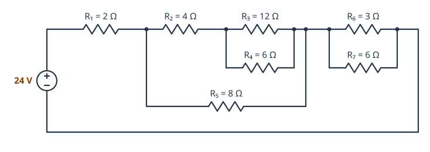

2. Tres ramas y once resistencias
Calcula:
- La intensidad suministrada por la fuente de 60 V.
- La intensidad de cada una de las tres ramas del bloque central.
- La tensión y la intensidad en R₉ y en R₁₀.
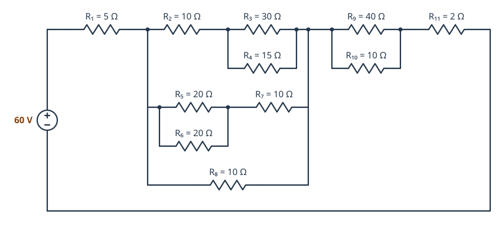

3. Fuente desconocida y unidades mezcladas
Calcula:
- El voltaje de la fuente, sabiendo que suministra 5 mA.
- La intensidad de cada rama del paralelo.
- La intensidad que pasa por R₅ y por R₆.
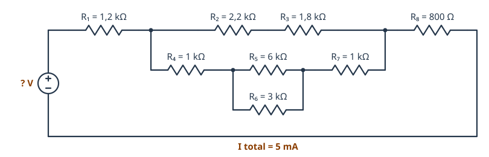

4. Red en escalera
Calcula:
- La intensidad suministrada por la fuente de 36 V.
- La intensidad que atraviesa R₇.
- La tensión y la intensidad en R₉.
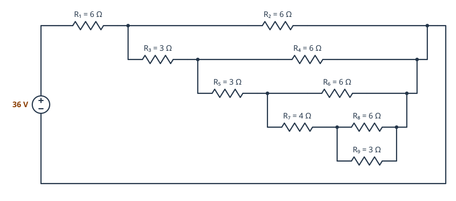

5. Dos fuentes en serie y balance de potencias
Calcula:
- La intensidad total que circula por las fuentes.
- La potencia que disipa cada una de las nueve resistencias.
- La potencia que entregan las fuentes. Comprueba la conservación de la potencia.
- ¿Qué resistencias no podrían ser de 1 W?
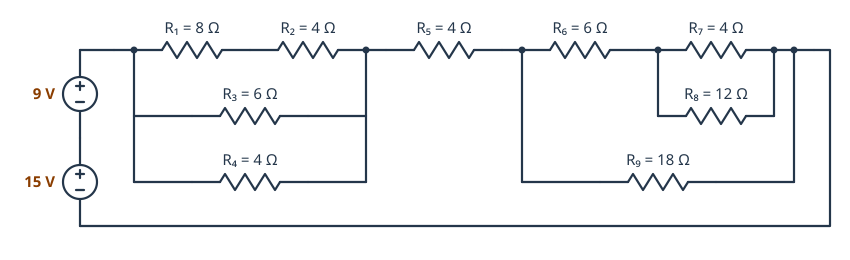

6. Problema inverso: la resistencia que falta
Calcula:
- El valor de Rₓ para que la fuente de 28 V suministre exactamente 2 A.
- La intensidad que pasa por Rₓ y la tensión entre sus terminales.
- La potencia que disipa Rₓ. ¿Sirve una resistencia de ½ W?
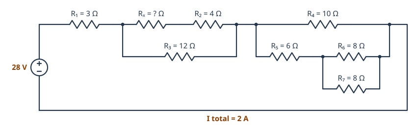

Boletín 5 · Circuitos enrevesados
Estos circuitos están dibujados para despistar. Antes de calcular nada, identifica los nudos. Puedes practicarlo en el taller de nudos, que comprueba cada paso.
- Pon una letra a cada nudo. Todo lo que está unido solo por cable, sin resistencias en medio, es el mismo nudo, aunque esté dibujado lejos.
- Un cruce de cables sin punto no está conectado. Con punto, sí.
- Anota entre qué dos nudos está cada resistencia. Dos resistencias están en paralelo si comparten los dos nudos, y en serie si comparten uno solo y de él no sale ninguna otra rama.
- Si una resistencia tiene sus dos extremos en el mismo nudo, está cortocircuitada. Si tiene un extremo libre, es una rama abierta. En los dos casos no pasa corriente por ella.
- Redibuja el circuito de forma ordenada y solo entonces aplica la Ley de Ohm.
1. La rama que parece paralela
Resuelve:
- Marca con una letra cada nudo. ¿Entre qué dos nudos está conectada cada resistencia?
- La resistencia equivalente y la intensidad total.
- La intensidad por R₅ y la tensión en R₂.
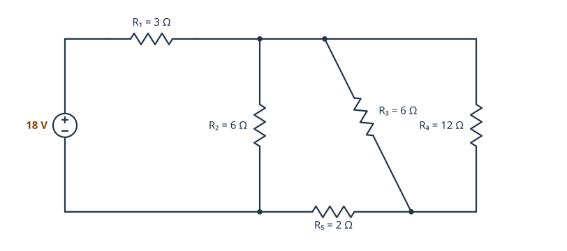

2. Cortocircuito escondido y rama abierta
Resuelve:
- La resistencia equivalente y la intensidad total.
- ¿Qué corriente pasa por R₄? ¿Y por R₅? Justifica la respuesta.
- La potencia que disipa cada resistencia y la que entrega la fuente.
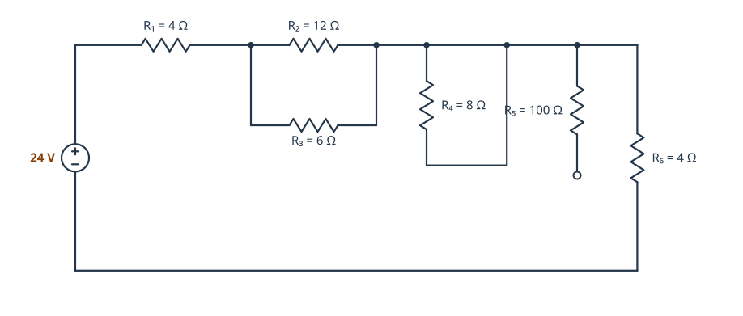

3. La falsa estrella
Resuelve:
- Parece una estrella dentro de un triángulo. Sigue el cable que sale del centro: ¿a qué nudo llega? ¿Cuántos nudos distintos hay?
- La resistencia equivalente y la intensidad total.
- La intensidad que pasa por cada una de las seis resistencias.
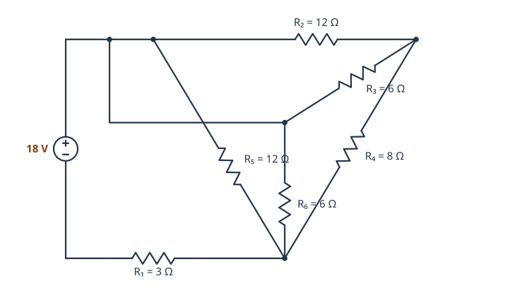

4. En fila, pero no en serie
Resuelve:
- R₂, R₃ y R₄ están dibujadas una detrás de otra. ¿Están en serie? Razónalo con los nudos.
- La resistencia equivalente y la intensidad total.
- Si se retira R₃, ¿cuánto vale la nueva intensidad total?
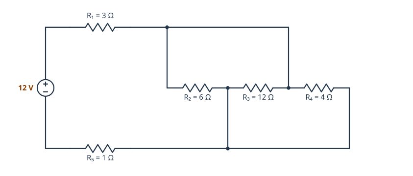

5. Diagonales cruzadas y fuentes enfrentadas
Resuelve:
- ¿Qué tensión neta aplican las dos fuentes? Fíjate en su polaridad.
- La resistencia equivalente y la intensidad total.
- La potencia de cada resistencia. ¿Cuánta potencia entrega la fuente de 36 V y qué le ocurre a la de 6 V?
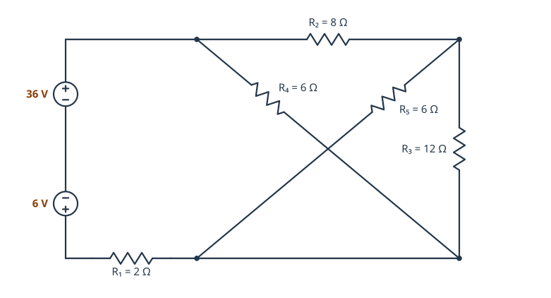

6. Reto: el puente equilibrado
Resuelve:
- R₅ no está ni en serie ni en paralelo con ninguna otra. Calcula R₁/R₂ y R₃/R₄. ¿Qué observas?
- Suponiendo que por R₅ no pasa corriente, calcula la resistencia equivalente y la intensidad total.
- Comprueba que la tensión del vértice superior coincide con la del inferior (respecto al borne −).
- Si R₄ fuese de 12 Ω, ¿seguiría sin pasar corriente por R₅?
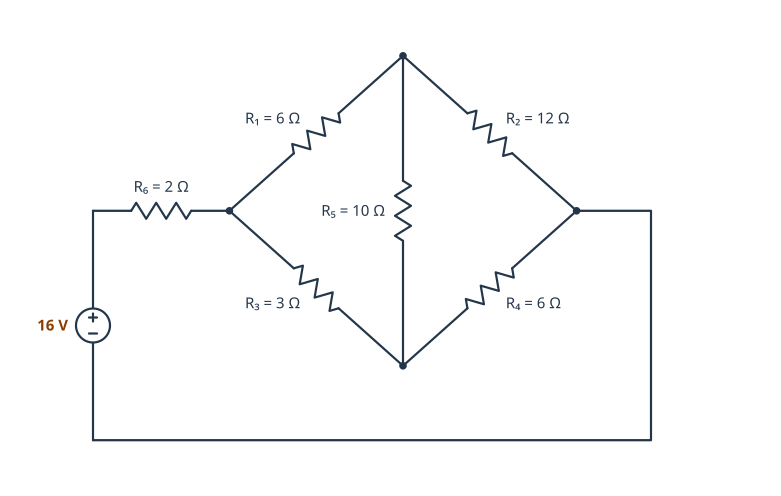